Tutorial: Simulate pressures in a tank
Use linear static analysis to simulate the stresses inside a pressure tank. The study parameters used in this tutorial are:
-
Structural Study type=Linear Static
-
Load type=Pressure
-
Constraint type=Fixed
-
Mesh type=Tetrahedral
The tutorial below is divided into four sections to make it easier to scan.
Define a structural study.
-
Open the file named FE_pressure_tank.par.
Simulation models are delivered in the \Program Files\Siemens\Solid Edge 2023\Training\Simulation folder.
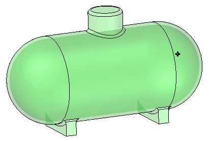
-
Set your force units to newtons:
-
On the File menu, click Info→File Units.
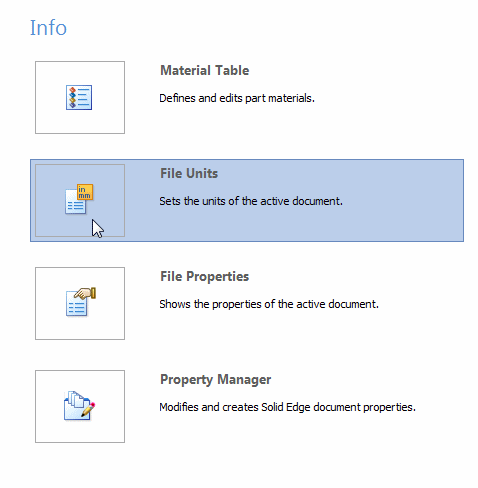
This displays the Units tab in the Solid Edge Options dialog box.
-
Observe that the unit system for this model is based on the metric MMKS (millimeter, kilogram, second).
You can make selective changes to these units using the Base Units table and the Derived Units table in this dialog box.
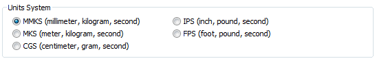
-
In the Derived Units table, the analysis properties are listed in the Name column. Scroll down to locate the table row for Force. Click in the Value box, and then choose N (newtons) from the list.
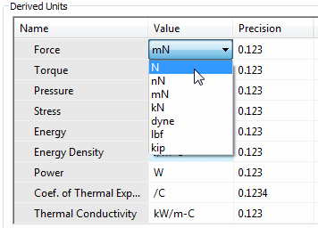
-
Click Apply and OK.
-
-
Create the study.
-
Assign a material to the part on the Simulation tab→Study group, by selecting Stainless steel from the Material List.

-
Select Simulation tab→Study group→New Study.

The Create Study dialog box is displayed.
-
Select the following:
Study type=Linear Static
Mesh type=Tetrahedral


As indicated in the Study group on the ribbon, the study was created and is active.

The new study also is listed on the Simulation pane.
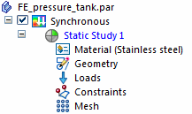
-
Define and modify a pressure load.
-
Select Simulation tab→Structural Loads group→Pressure.

-
In PathFinder, click Thin-Wall 2 to select the inside faces of the tank.
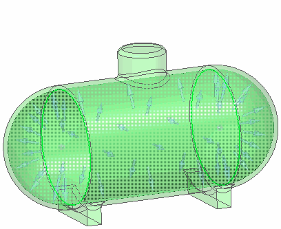
-
Type 200 psi in the Value box. Press Enter.
The typed units automatically convert to the file units of kiloPascals.
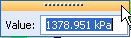
-
Click in space to finish and exit the command.
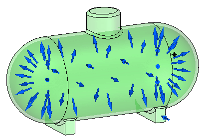
-
Modify the pressure value.
-
Expand the Loads node in the Simulation pane and double-click Pressure 1.
-
Type 1000 kPa in the Value box and press Enter.
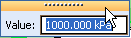
-
Click to finish.
-
Apply fixed constraints.
-
Select Simulation tab→Constraints group→Fixed.

-
Select all of the planar faces on the two supports.
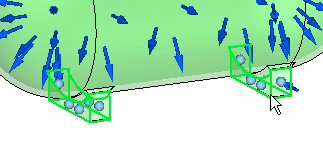
-
Right-click in space to accept and click to finish.
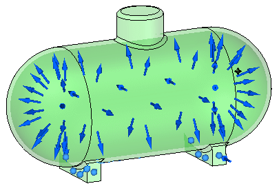
Solve the study and review the results.
-
Turn off loads and constraints in the Simulation pane.
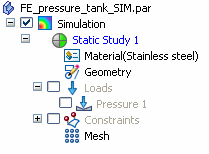
-
Right-click the Mesh node in the Simulation pane, and choose the Mesh command from the shortcut menu. Choose Mesh & Solve from the Mesh dialog box.
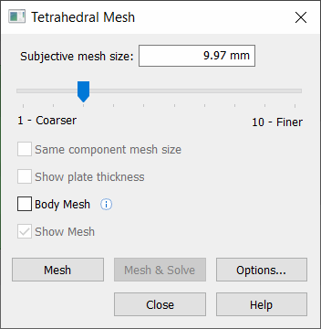
The Simulation Results environment is displayed when processing is complete.
The Von Mises stress plot is shown on the deformed model by default.
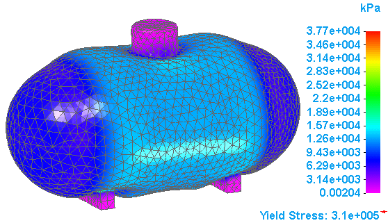
-
To display the undeformed model, select the Display tab→Show group→Display Options command
 .
. -
On the Display Options list, clear the Deformation check box, and click Close.
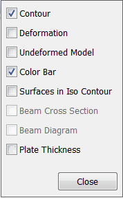
Now the results are shown on the undeformed model.
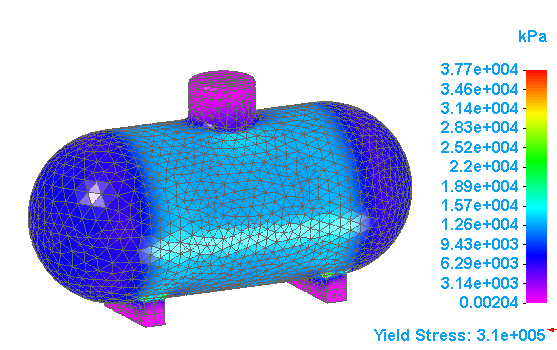
-
On the ribbon, click Close Simulation Results.

-
Close this file.